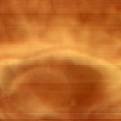
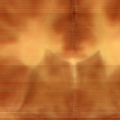
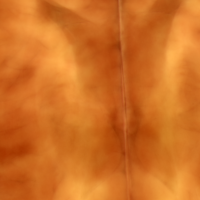
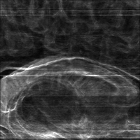
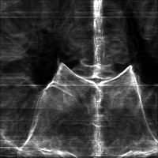
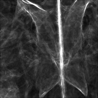
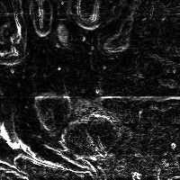

|

|

| |||
| teem | / | nrrd | / |
Visible Female |
Cube of Brain |
One should wonder at this point if these discontinuities in intensity will ever be evident in later stages of visualization or processing. The Visible Female RGB color brain data is higher resolution (0.33 mm/pixel) than than the CT (0.48 mm/pixel) or the MRI (0.86 mm/pixel), so it would be a pity if the inter-slice brightness variations caused difficulties.
To test this, we select (from the full-resolution head images) a small cubical region inside the brain, which contains some of the discontinuities. The region to process was selected based on inspecting the xsum.png and ysum.png images above to find which Z slices were contained the brain (as aided by a mapping from Z index to slice name (slicelist.txt), created by a little C program (slicelist.c)), as well as inspecting the cropped head PPM images themselves. Once the cropped volume is created, we can do summed projections along X, Y, and Z to get a sense of what's inside.
unu join -i avf10{44,45,46,47,48,49}?.raw.Z.head.ppm \
avf10{5,6,7,8,9}??.raw.Z.head.ppm avf110??.raw.Z.head.ppm \
avf1110a.raw.Z.head.ppm avf1110b.raw.Z.head.ppm -a 3 \
| unu crop -min 0 157 234 0 -max M m+199 m+199 M -o brcube.nrrd
unu project -i brcube.nrrd -a 1 -m sum \
| unu quantize -b 8 | topng doc/brcubeYZ.png
unu project -i brcube.nrrd -a 2 -m sum \
| unu quantize -b 8 | topng doc/brcubeXZ.png
unu project -i brcube.nrrd -a 3 -m sum \
| unu quantize -b 8 | topng doc/brcubeXY.png
|  brcubeYZ.png |  brcubeXZ.png |  brcubeXY.png |
Another way to see the effect of the inter-slice brightness variations is to create a derivative volume from the color volume. At each location in the RGB volume we can measure a kind of first derivative which is a 3x3 matrix. It is the sum of the outer products of the color component gradient vectors. The L2 norm of this matrix is a good indicator of the amount of local change; this metric has been used by computer vision researchers doing feature detection in color images. Teem comes with a program for doing just this, called vprobe. Actually, vprobe can measure various kind of values and derivatives in both scalar and vector volumes, but we only need it for a specific derivative measure in 3-vector data.
vprobe -i brcube.nrrd -k vector -q l2mg -k00 cubic:0,0.5 -k11 cubicd:1,0 -o mgbr.nrrd unu project -i mgbr.nrrd -a 0 -m sum \ | unu quantize -b 8 -min 6000 -max 100000 | topng doc/mgbrYZ.png unu project -i mgbr.nrrd -a 1 -m sum \ | unu quantize -b 8 -min 6000 -max 100000 | topng doc/mgbrXZ.png unu project -i mgbr.nrrd -a 2 -m sum \ | unu quantize -b 8 -min 6000 -max 100000 | topng doc/mgbrXY.png
|  mgbrYZ.png |  mgbrXZ.png |  mgbrXY.png |
unu slice -i mgbr.nrrd -a 0 -p 43 \ | unu quantize -b 8 -min 0 -max 800 | topng doc/mgbrX043.png
mgbrYZ.png |  mgbrX043.png |